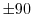

This routine swaps specific pairs of atoms within some residues of MODEL so that certain dihedral angles are within , satisfying the IUPAC convention [IUPAC-IUB, 1970,Kendrew et al., 1970]. These residues, pairs of atoms, and dihedral angles are:
It is possible that for distorted sidechains, neither of the two possibilities satisfies the IUPAC convention. In such a case, a warning message is written to the log file.
# This will swap certain atom names in some planar sidechains to satisfy # the IUPAC convention. from modeller import * env = environ() env.io.atom_files_directory = ['../atom_files'] log.level(1, 1, 1, 1, 0) mdl = model(env, file='2abx') mdl.to_iupac() mdl.write(file='2abx.iup')